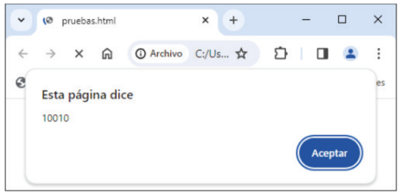
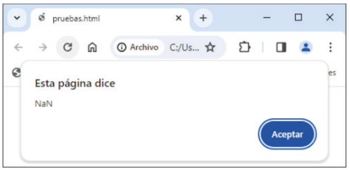
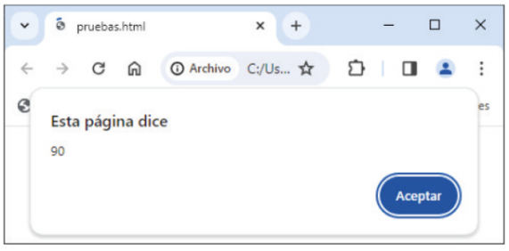
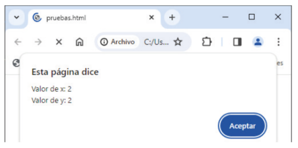
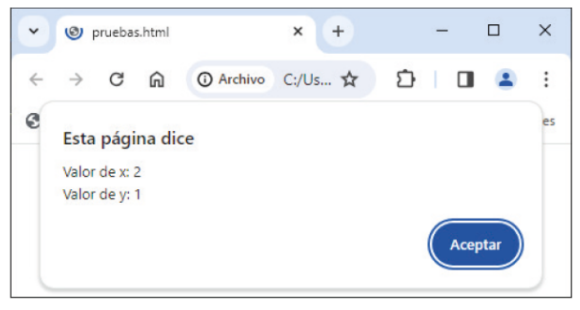
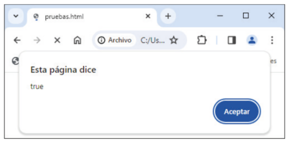
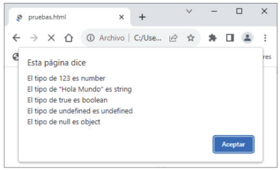

Capítulo 5 - Operadores
Una vez conocidos los valores que pueden adquirir los tipos de datos primitivos, sólo quedaría conocer que operaciones les podemos dar o asignar.
Los operadores son símbolos especiales con los que trabajar/operar sobre el conjunto de dos o más operandos, valores de variables o constantes, el resultado de una función o el resultado dado por otra expresión.
Ejemplo de uso de operandos:
2 + 3 // El símbolo " + " es el operador que cumple la función de suma entre dos operandos.
(8 / 4) + x // El símbolo " / " es el operador que cumple la función de división entre dos operandos.
Y el símbolo " + " suma el resultado de la división con el valor de la variable "x".
Así como hemos visto la suma, JavaScript también permite operciones sin depender de un segundo operando, dadno la oportunidad de emplear o uasr operadores unarios o incluso operadores tenarios:
Ejemplo de uso de operadores unarios:
x++
Ejemplo de uso de operadores binarios:
2 ** 3 // Potencia
Ejemplo de uso de operadores tenarios:
let edad = (x > 18);
let mensaje = edad >= 18 ? "Eres mayor de edad" : "Eres menor de edad"; // el operador " ? " separa la
condición del valor "true", es decir, corredsponde a
la condición verdadera.
El operador " : " separa la condición del valor "false",
es decir, corresponde a la condición falsa.
const a = 5;
const b = 7;
Aritméticos. realizan operaciones matemáticas sobre sus operandos. Como por ejemplo:
Suma ( + ): Tiene dos funcionalidades, por un lado suma operandos cuando el valor es numérico y por el otro, concatena cuando trabaja con cadenas.
Suma de operandos:
alert(a + b) // mostrará 12
Concatenación de cadenas:
"¡Hola " + Mundo! // mostrará "¡Hola Mundo!"
En el caso de que uno de los dos valores fuese una cadena, JavaScript tratará al otro
por igual:
"Hola " + 14 // mostrará Hola 14
"100" + "10" // mostrará 10010

Si por algún casual se estuviese trabajando con un valor numérico y una cadena con una
operación que no fuese la 'suma' daría el resultado de que no es un número ('NaN'):
"Naranja" / 2 // no mostrará media naranja, mostrará "NaN"

Incremento ( ++ ): Incrementa al valor del operador de uno en uno.
alert(a++) // mostrará 6
Resta ( - ): Es el inverso a la 'suma'. Resta los operandos.
alert(a - b) // mostrará -2
La resta sólo trabajará como operación matemática, no hará la segunda función de la suma:
"100" - "10" - y - "100" - 10 // mostrarán 90

Decremento ( -- ): Es el opuesto al 'incremento'. Decrementa al valor del operador de uno en uno'.
alert(a--) // mostrará 4
Multiplicación ( * ): Multiplica los operandos.
alert(a * b) // mostrará 35
Exponenciación/Potencia ( ** ): Eleva el primer operando al segundo.
alert(a ** b) // mostrará 78125
División ( / ): Divide el primer operando entre el segundo.
alert(a / b) // mostrará 0.714
Resto ( % ): Similar al anterior, pero devuelve el resto dado por la división.
alert(a % b) // mostrará 5
Negación ( - ): Cambia el signo del operando. No interfiere con el signo de resta pues la 'negación' es una operación unaria.
alert(-a) // mostrará -5
Algo muy importante a tener en cueZnta es que tanto el 'incremento' como el 'decremento' y
la 'negación' son unarios, por lo que suelen tener particularidades, como por ejemplo, los
dos primeros no tendrán el mismo valor en caso de su uso sea puesto antes o después del valor:
const x = 1;
const y = ++x;
alert("Valor de x: " + x + "\nValor de y: " + y); // mostrará lo siguiente:

En cambio, si el 'decremento', en este caso, lo ponesmos después del valor, el valor
final será otro:
const x = 1;
const y = x++;
alert("Valor de x: " + x + "\nValor de y: " + y); // mostrará lo siguiente:

Esto ocurre ya que el valor de la variable 'x' se incrementa después de haberle sido asignado a la variable 'y'.
Asignación. Es el símbolo conocido como " = ". Asignan el valor del operador derecho al operador izquierdo.
A. Simple ( = ): Cumple la función del igual visto en matemáticas. Asigna el valor resultado de la izquierda a la expresión de la derecha.
Eejemplo de asignación simple:
const c = a;
alert (c); // mostrará 5
const c = a + b;
alert (c); // mostrará 12
A. de suma ( += ): Asigna a la variable de la izquierda el resultado de la suma dada entre la expresión de la derecha más el valor original de la variable de la izquierda.
const b += a; // mostrará 12
También equivaldría a poner lo siguiente:
const b = b + a; // b = 7 + 5 → b = 12
A. de resta ( -= ): Lo opuesto al operador de asignación anterior.
const b -= a; // mostrará 2
También equivaldría a poner lo siguiente:
const b = b - a; // b = 7 - 5 → b = 2
A. de Multiplicación ( *= ): Lo mismo que los anteriores cassos pero con la multiplicación.
const b *= a; // mostrará 35
También equivaldría a poner lo siguiente:
const b = b * a; // b = 7 * 5 → b = 35
A. de Exponenciación/Potencia ( **= ): Lo mismo pero elevando al exponente inicial, el de la izquierda, por el valor del de la derecha.
const b **= a; // mostrará 16807
También equivaldría a poner lo siguiente:
const b = b ** a; // b = 7 ^ 5 → b = 16807
A. de División ( /= ): Asigna la variable situada a la izquierda el resultado de la división dado por la expresión de la derecha.
const b /= a; // mostrará 16807
También equivaldría a poner lo siguiente:
const b = b / a; // b = 7 / 5 → b = 1.4
A. de Resto ( % ): Similar al anterior, pero devolviendo el valor del restante dado por la división.
const b %= a; // mostrará 2
También equivaldría a poner lo siguiente:
const b = b % a; // b = 7 / 5 → b = 2
Comparación. Son operandos que devolverán un valor "true" u otro "false". Se obtendrán de operandos numéricos, lógicos, cadenas de caracteres, etc.
Igual ( == ): Delvoverá 'true' si el valor de los dos operandos es coincidente y 'false' en caso de que no.
Eejemplo de igualdad (Igual):
a == b // mostrará false
a == a // mostrará true
Extrictamente igual ( === ): Funciaona o trabaja de la misma manera que el anterior operador, con la diferencia de que éste es más estricto, pues no sólo comparará el valor, también el tipo.
Eejemplo de igualdad estricta (Extrictamente igual):
a === b // mostrará false
a === a // mostrará true
const c = "7"
b === c // mostrará false
Distinto ( != ): Lo opuesto a 'Igual'. Compara si dos valores son distintos, devolviendo como resultado 'true' si son distintos y 'false' en caso contrario.
Eejemplo de desigualdad (Distinto):
a != b // mostrará ture
a != a // mostrará false
Extrictamente distinto ( !== ): Similar a 'extrictamente igual' pues comparará tanto el valor como el tipo, pero en el momento en el que uno de los dos sea distinto al comparado, éste devolverá 'true'.
Eejemplo de desigualdad estricta (Extrictamente distinto):
a !== b // mostrará true
a !== a // mostrará false
const c = "7"
b !== c // mostrará true
Menor ( < ), menor o igual ( <= ), mayor ( > ), mayor o mayor o igual ( >=): Función igual que en matemáticas, estas relaciones de orden, también conocidas como 'operadores de comparación' devolverán 'true' siempre cuando el primer operando cumpla con la relación dada respecto al segundo operando.
Eejmplo de menor que (Menor):
a < a // mostrará false
a < b // mostrará true
b < a // mostrará false
Eejmplo de menor o igual que (Menor o igual):
a <= a // mostrará true
a <= b // mostrará true
b <= a // mostrará false
Eejmplo de mayor que (Mayor):
a > a // mostrará false
a > b // mostrará false
b > a // mostrará true
Eejmplo de mayor o igual que (Mayor o igual):
a >= a // mostrará true
a >= b // mostrará false
b >= a // mostrará true
Hay que hacer hincapié en que JavaScript también es capaz de comparar cadenas de caracteres al igual que si fuesen valores numéricos, para ello, la lectura la hará de forma lexicográfica, es decir, carácter a carácter.
let a = "Java";
let b = "JavaScript";
alert(a < b); // mostrará true.

En verdad la comparación se realiza bajo el valor estándar del carácter en UNICODE, por tanto,
a pesar de la libertad y permisibilidad de JavaScript para los errores y el tratamiento de valores,
si pusiéramos lo siguiente obtendríamos 'false' como resultado:
let a = "java";
let b = "JavaScript";
alert(a < b); // mostrará false. 'J' ocupa la posición 74 y el carávter 'j' ocupa la posición 106.
Por lo que, 74 es menor que 106, bteniéndo así 'true' como resultado.
Lógicos. Al igual que en el anterior, son operandos que devolverán un valor "true" u otro "false". Su diferenciación es que este valor se obtendrá sobre las reglas de algebra 'Boole'.
AND ( && ): Devuelve 'true' si ambos operandos son 'true' y 'false' en caso contrario.
Ejemplo de uso de 'AND':
let usuarioLogueado = true;
let tienePermiso = true;
if (usuarioLogueado && tienePermiso){
console.log("Acceso permitido");
} else{
console.log("Acceso denegado");
}
Para valores no booleanos:
console.log(0 && "Hola"); // mostrará: 0
console.log(5 && "Hola"); // mostrará: "Hola"
(Explicación: Como '0' se evalúa como 'false', se devuelve '0' y no 'Hola'. En el segundo caso,
'5' es 'true', así que devuelve "Hola").
OR ( || ): A diferencia del operador anterior, este devolverá 'true' si en alguno de los dos operandos se cumple la premisa de 'true', sino, si ambos operandos son 'false' dará 'false'.
let esAdmin = false;
let esModerador = true;
if (esAdmin || esModerador){
console.log("Acceso al panel de administración");
} else{
console.log("Acceso restringido");
}
Para valores no booleanos:
console.log("" || "Texto por defecto"); // mostrará: "Texto por defecto"
console.log("Hola" || "Texto por defecto"); // mostrará: "Hola"
(Explicación: Como ' "" ' se evalúa como 'false', el operador devuelve el segundo valor y viceversa
para el segundo caso).
NOT ( ! ): Retorna 'true' si su único operando es 'false' y viceversa.
let esInvitado = false;
if (!esInvitado){
console.log("Bienvenido usuario registrado");
} else{
console.log("Por favor, regístrate");
}
Para valores no booleanos:
console.log(!0); // mostrará: true
console.log(!"Hola"); // mostrará: false
(Explicación: '0' es 'false', y al aplicar ! se convierte en true. "Hola" es true, así que al aplicar
'!' se convierte en 'false').
Condición/ones. Visto en el ejemplo de operadores ternarios. Consta de una condición que derivará en dos valores. La condición podrá ser lógica y/o de comparación. Se caracteriza por se el único operador ternario o que trabaja con tres valores a la vez. "condición?valor1:valor2". Su funcionamiento es basntante sencillo, si la condición se evalúa como 'true' el operador devolvería el 'valor1' y en caso contrario, el 'valor2'.
Ejemplo de uso de operador condicional:
let a = "Java";
let b = "JavaScript";
alert(a < b ? a + " es menor que " + b : a + " es mayor que " + b) // mostrará "JavaScript es mayor que
Java"
(Explicación: Aquí la condición es 'a < b', 'valor1' es 'a + " es menor que " + b' y 'valor2' es 'a + "
es mayor que " + b').

'typeof'. El 'typeof' es un operando unario. En el, se devuelve el tipo de dato al que corresponde o pertenece su operando. Se caracteriza por permitir las siguientes sintaxis
Opción 1:
typeof operador
Operador 2:
typeof (operador)
Dentro de este operador, además de usar los distintos tipos de datos primitivos vistos en el capítulo anterior, éste también identifica los siguientes tipos de datos:
Object. Ssus valores son objetos, estructuras de datos muy peculiares formadas por atributos y métodos (pilar que sigue la filosofía de la programación orientada a objetos).
Function. Por raro que suene, dentro de este operador las funciones son vistas como valores.
Ejemplo de estos particulares cassos:
alert("El tipo de dato de 123 es " + typeof(123) + "\nEl tipo de dato de \"¡Hola mundo!\" es " + typeof("¡Hola mundo!") + "\nEl tipo de dato de true es " + typeof(true) + "\nEl tipo de dato de undefined es " + typeof(undefined) + "\nEl tipo de dato de null es " + typeof(null) + "\nEl tipo de dato de NaN es " + typeof(NaN)");

Por último hay que hacer mención al orden, prioridad o precedencia de operadores en caso de encontrarnos o necesitar escribir sentencias o expreseiones con más de un operador. Siendo este el siguiente:
Operadores de incremento y decremento: ( ++, -- ).
Operadores de negación y obtención de tipo: (-, typeof).
Operadores de exponenciación: ( ** ).
Operadores de multiplicación, división y resto: ( *, /, % ).
Operadores de adición/suma y sustración/resta: ( +, - ).
Operadores de comparación: ( <, <=, >, >=).
Operadores de igualdad: ( ==, !=, ===, !== ).
Operador condicional: ( ? : ).
Operadores de asignación: ( =, +=, -=, *=, **=, /=, %=).
Más información sobre estos y otros tipos de operadores.